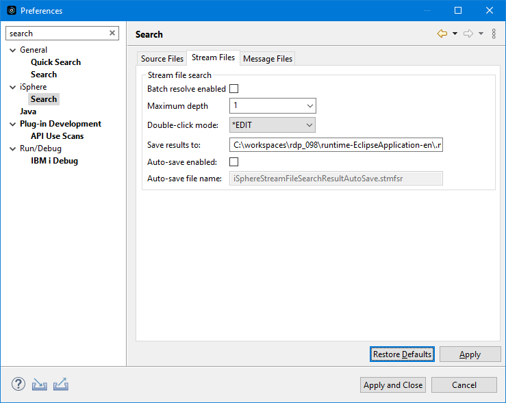

The available stream file search options are:
| Double-click mode | - | Specifies whether the Lpex editor is started in browse or edit mode, when double-clicking an IFS stream file. |
| Save results to | - | Specifies the folder in which to save stream file search results. |
| Auto-save enabled | - | Specifies if the content of the iSphere Stream File Search view is saved automatically. |
| Auto-save file name | - | Specifies the file name where search results are saved. |